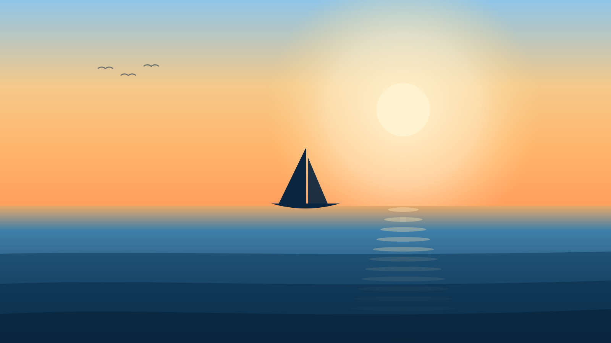
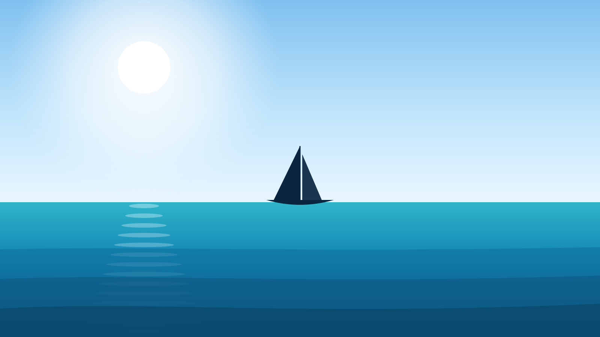
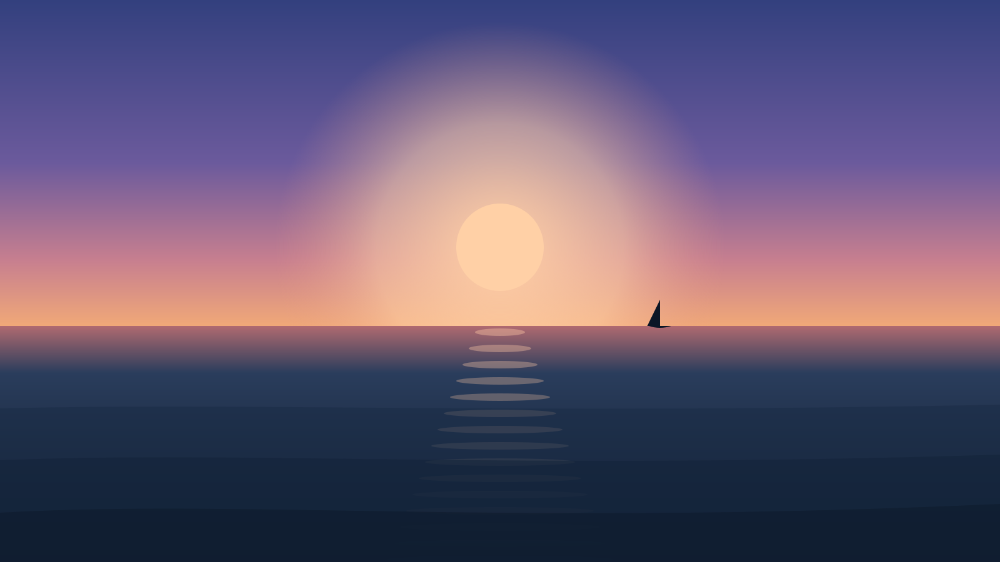
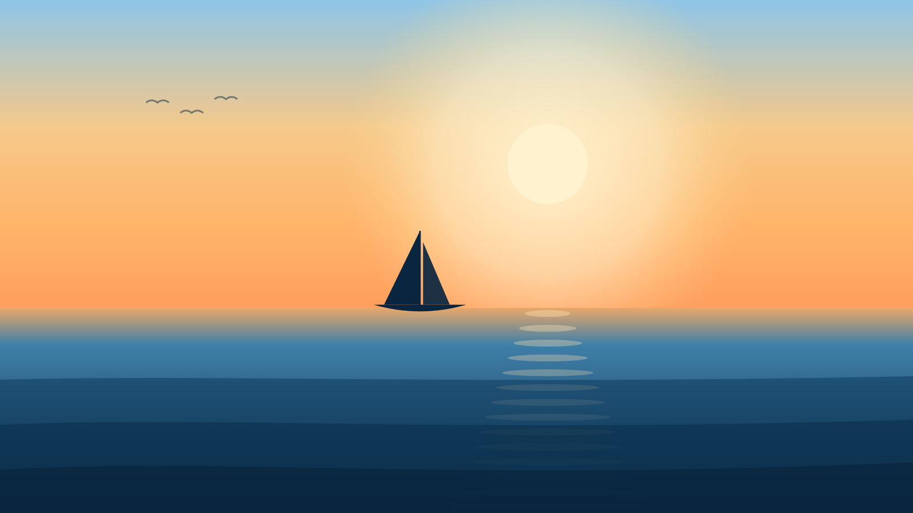

Sailing · Therapy · Resilience
Sail Beyond Horizons pairs real sailing lessons with one-on-one sessions with a licensed therapist — so the skills you build on the water become the skills you use on land.

Our promise
The calm you find on the water carries with you.
You'll learn to read the conditions, trim your sails, and hold your course through the wind — and with a therapist beside you, you'll carry that same steadiness ashore. Into the hard conversations. The anxious mornings. The moments that used to knock you off course. You'll leave not just feeling better, but knowing exactly how you got there — and how to find your way back to your true self.
How it works
You head out with an instructor from a trusted local sail school. No experience needed. You learn to handle the boat, feel the wind, and make real decisions in real conditions.
After your sail, you meet privately with a licensed therapist to unpack your experience and how it relates to your everyday life — where you tensed up, where you found calm, what you controlled and what you couldn't.
You leave with real-world tools you can apply to everyday life: a way of meeting adversity on land the same way you met the wind on the water.



Why sailing
Adventure- and nature-based therapy has a growing evidence base, and the findings are consistent: it's calming, it's safe, people actually enjoy it, and it builds the exact skill we teach — psychological flexibility, the ability to respond to a situation with conscious intent instead of gut reaction.
That middle number is the one to remember. The hardest part of getting better isn't the therapy — it's staying with it. Sailing keeps people coming back. A sailor doesn't fight the wind. They adjust. We help you do the same.
The Skills
Our most ownable idea: every sailing lesson carries a lesson for land. A few of the skills we teach —
You can't change the weather. You can change how you meet it. Learn to adjust to what's in front of you instead of condemning it — no one blames the wind for blowing.
A boat leans hard in a strong gust — and stays upright. Discomfort isn't danger. Learn to tolerate the tilt of a stressful moment without believing you're about to capsize.
Experienced sailors spot the gust before it hits by the ripple on the surface. Learn to notice your own early warning signs so stress doesn't blindside you.
You shorten sail before the storm, not during it. Learn to scale back and protect yourself ahead of overwhelm, instead of waiting until you're swamped.
Sail Beyond Horizons is a wellness and skill-building experience that complements professional mental health care. It is not a replacement for treatment.
Set your course